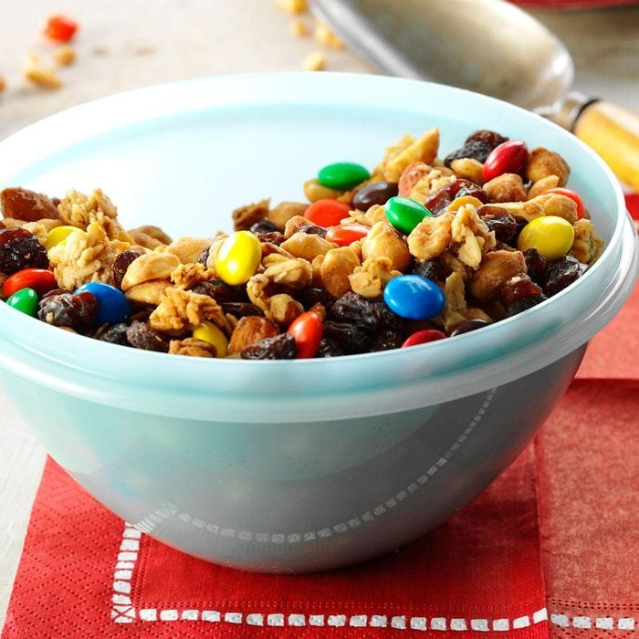

Granola Trail mix

"My family has always enjoyed this crunchy four-ingredient snack. When we
go camping, each person includes one additional ingredient like mini
marshmallows, corn chips or cookie pieces. The taste is never the same,
and we're often surprised by the combinations.
—Shelley Riddlespurger, Amarillo, Texas
Ingredients
- 1 package (16 ounces) banana-nut granola
- 1 package (15 ounces) raisins
- 1 package (12.6 ounces) milk chocolate M&M's
- 1 can (12 ounces) honey-roasted peanuts
Directions
-
Place all ingredients in a large bowl; toss to combine. Store in
airtight containers.
Return